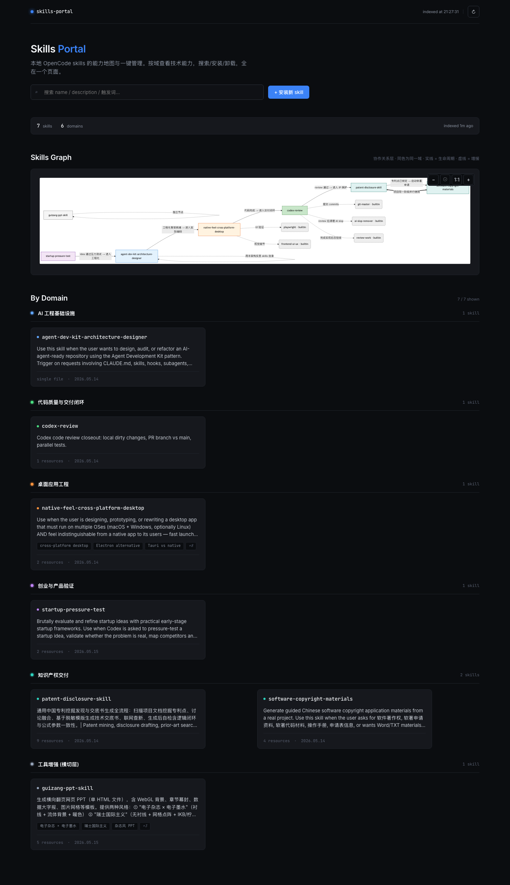

Give OpenCode
a brain for skills.
Skills Manager AI Agent is the missing lifecycle layer for OpenCode skills: install · classify · graph · doctor · recommend — all driven by a local FastAPI + Vue portal you can run on your laptop.
30 SECONDS
Install a skill, end-to-end.
One slash command. The agent clones the repo via portal API, infers the right domain,
updates INDEX.md, redraws
skills-graph.png, and refreshes the portal —
with timestamped backups and post-write verification at every step.
$ /skill-install https://github.com/op7418/guizang-ppt-skill
✅ portal API health
✅ git clone ok
✅ frontmatter validated: name=guizang-ppt-skill
✅ domain inference: tooling (evidence: ppt, swiss style, html)
✅ INDEX.md row inserted (backup: .bak.20260515T212727)
✅ skills-graph.mmd node added as GPS
✅ skills-graph.png re-rendered (259330 bytes)
✅ portal refreshed: skill_count = 6 → 711 SLASH COMMANDS
A complete skill lifecycle.
/skill-install
Install from GitHub URL. Auto-classify, INDEX, graph.
/skill-uninstall
Reverse all metadata cleanup. Idempotent.
/skill-update
git pull one skill or all + refresh portal index.
/skill-list
Print all installed skills grouped by domain.
/skill-recommend
Suggest a load_skills=[...] combo for a task.
/skill-classify
Manually reassign a skill to a different domain.
/skill-doctor
5-rule health check per skill.
/skill-graph-sync
Reconcile graph against INDEX. Idempotent.
/portal-start
Bring portal (5174 + 5173) online. Idempotent.
/portal-stop
Kill processes on ports 5173 + 5174.
/portal-status
PID, last index time, skill count.

TWO-LAYER ARCHITECTURE
Portal underneath. Agent on top.
The portal (FastAPI on :5174 + Vue on :5173) owns
the physical skill files: clone, validate, copy, uninstall.
The agent orchestrates the portal API and writes
three metadata files directly (INDEX.md,
skills-graph.mmd,
skills-graph.png) — with atomic writes, microsecond-stamped
backups, and post-write verification.
Built for the OpenCode power user.
You have ≥ 3 skills installed
And keep forgetting which one to load. Skill recommendations come from your real INDEX.
You install new skills monthly
Manual classify + graph + INDEX upkeep is becoming a chore. Let the agent do it.
You want the meta-layer right
Health checks, dependency audit, domain coherence — all in one /skill-doctor.
Ready in ~10 minutes.
Clone, bootstrap the portal venv, install frontend deps. Then OpenCode auto-discovers everything.
Start the install guide →